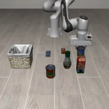
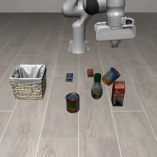

UR5e に Franka の手（Panda グリッパ）を付け、開始はその配置の Franka 手先。その重みを Franka で評価した。0 はスープ。50 配置・seed 7・300 ステップ。
公式判定 33/50。近づき 50/50、つかむ 41/50、持ち上げ 41/50。Robotiq の B0→A0 は 0/50。
| 条件 | 内容 |
|---|---|
| 学習の腕 | UR5e |
| 学習の手 | Panda グリッパ |
| 学習の開始 | その配置の Franka 手先。ずれ 5 mm |
| 評価 | Franka。開始もその配置の Franka 手先。ずれ 0.2 mm |
| グリッパの数字 | Franka の閉じ具合の式 |
| 判定 | 33/50 |


デモは open-loop 50/50。学習 10k ステップ。ガウシアンノイズなし。